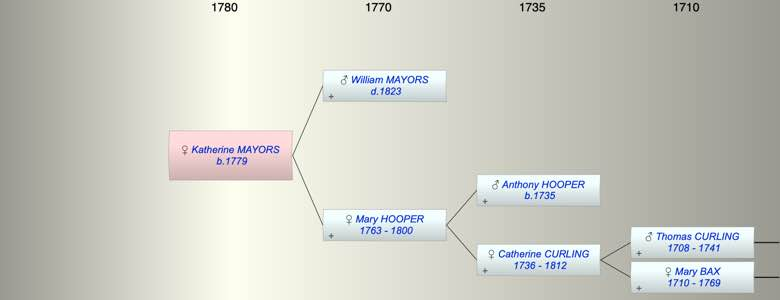

| [Index] |
| Katherine MAYORS (1779 - ) |
|  |
| b. 30 Apr 1779 at St Laurence |
| Parents: |
| William MAYORS ( - 1823) |
| Mary HOOPER (1763 - 1800) |
| Siblings (4): |
| Anthony MAYORS |
| Elizabeth MAYORS |
| Mary MAYORS (1789 - ) |
| William MAYORS (1791 - ) |
| Events in Katherine MAYORS (1779 - )'s life | |||||
| Date | Age | Event | Place | Notes | Src |
| 30 Apr 1779 | Katherine MAYORS was born | St Laurence | Note 1 | ||
| 1800 | 21 | Death of mother Mary HOOPER (aged 37) | St Laurence | Note 2 | |
| 1823 | 44 | Death of father William MAYORS | St Laurence | buried St Laurence 4 Mar 1823 | |
| Note 1: born 30 Apr 1770 and bap St Laurence 7 Jul 1779 ex FMP PR |
| Note 2: buried St Laurence 12 Dec 1800 wife of William, died of decay aged 37 ex Ancestry |
| Created on a Mac™ using iFamily for Mac™ on 8 Oct 2023 |